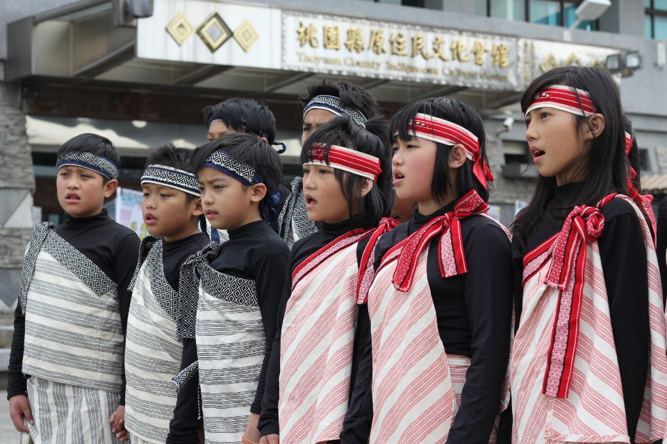
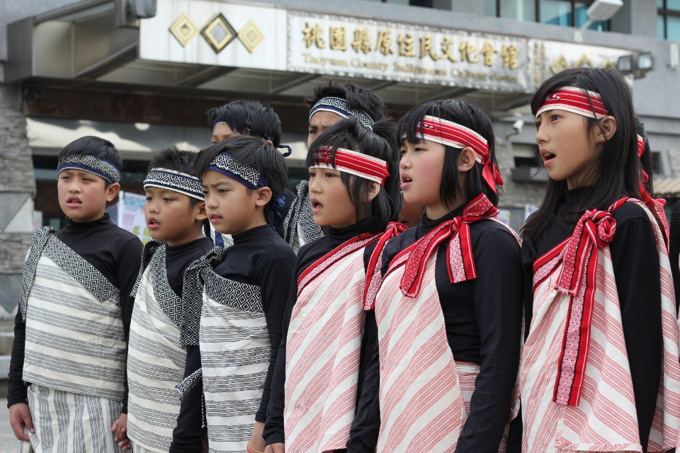

族群介紹
泰雅族主要分布於台灣中北部的山區，如新北、桃園、宜蘭、苗栗、南投等地。 傳統社會以 gaga（祖訓） 為核心價值，強調族人之間的責任與互相扶持。 泰雅族也以紋面文化與精美的織布圖紋聞名，圖案往往代表家族、身分與記憶。
地理位置（Google 地圖示意）
使用方式：在 Google 地圖搜尋地點 → 按「分享」 →「嵌入地圖」→ 複製 iframe 內的網址，
貼到上面 YOUR_GOOGLE_MAP_EMBED_URL 的位置即可。
景點特色
以下為與泰雅族文化、歷史及自然環境相關的重要景點：
| 地點名稱 | 所在縣市 | 特色說明 |
|---|---|---|
| 武陵農場（泰雅族傳統領域） | 臺中市 | 位於泰雅族生活領域，周邊山區保留泰雅族的山林文化、狩獵傳統與自然景觀。 |
| 司馬庫斯部落（被稱為「上帝的部落」） | 新竹縣 | 擁有巨木群、傳統木屋文化，保存完整的泰雅族生活方式，是最知名的部落之一。 |
| 烏來部落（泰雅族文化重要聚落） | 新北市 | 以溫泉、瀑布與泰雅族文化館聞名，能深入認識泰雅紋面、編織與山林文化。 |
飲食文化
泰雅族飲食與山林緊密相關，以下列出常見傳統料理：
| 料理名稱／食物 | 主要食材 | 文化特色說明 |
|---|---|---|
| 竹筒飯（紮實口感） | 糯米、竹筒、山野香料 | 利用竹筒加熱蒸煮，是泰雅族的山林料理，象徵與自然共存。 |
| 獵物料理（示意） | 山豬、山羌、山禽類 | 反映泰雅狩獵文化與敬畏山林精神，常在傳統節慶中分享。 |
| 野菜料理（山芹菜、山蘇等） | 野菜、香料 | 泰雅族擅長採集野生植物，多以清燙或快炒呈現天然風味。 |
照片與影片介紹
部落／祭典照片
 

以上為泰雅族的衣著特色。
影片介紹
以上為泰雅族的文化介紹影片。